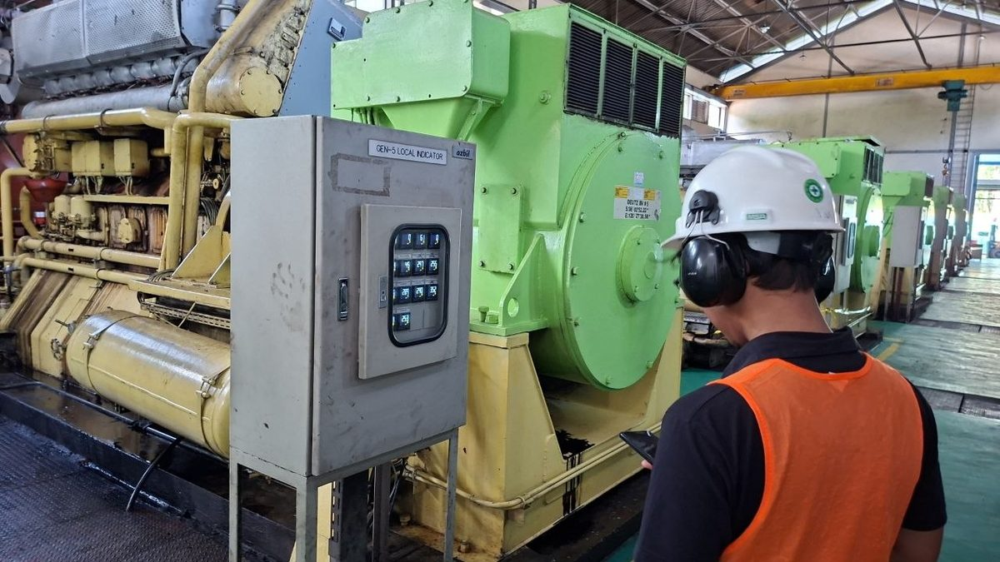
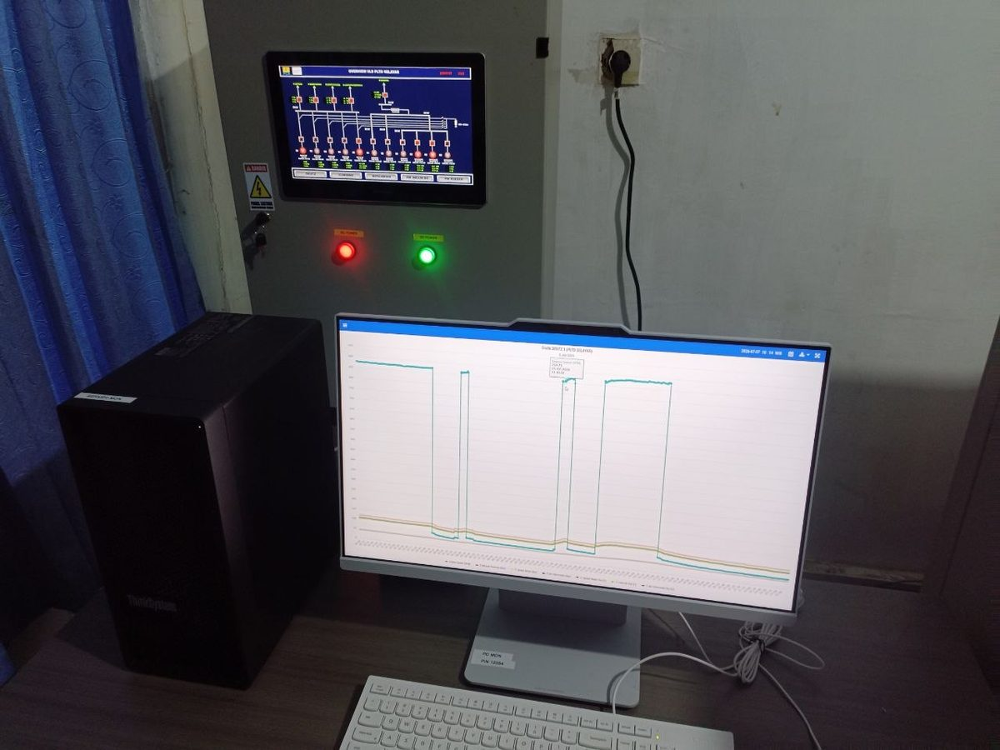
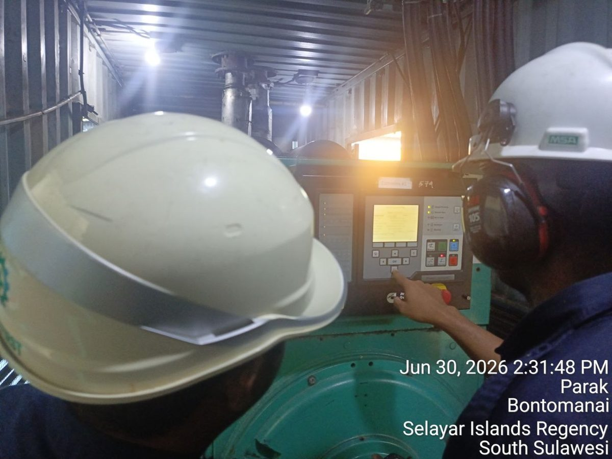
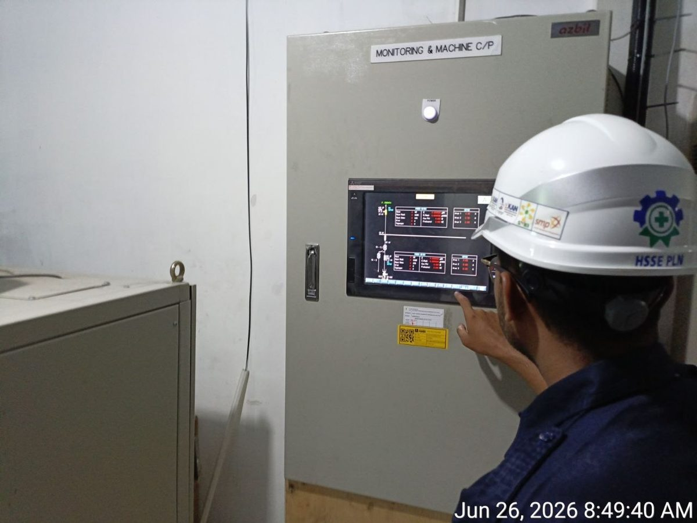
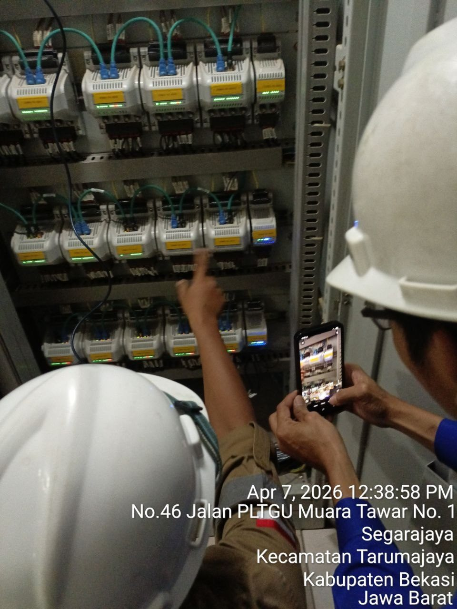
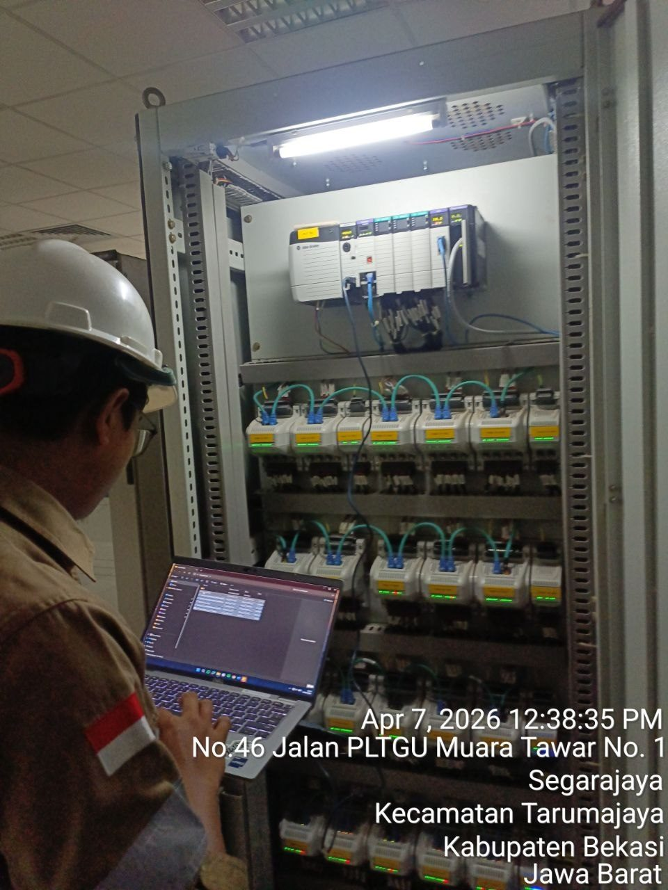
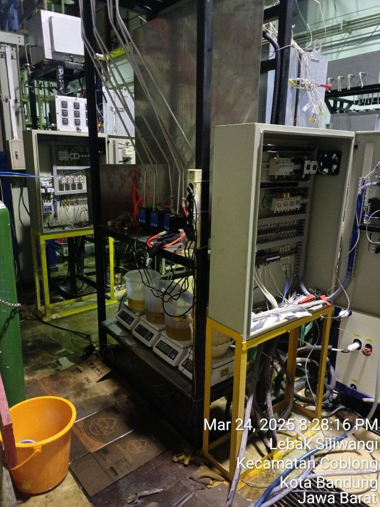
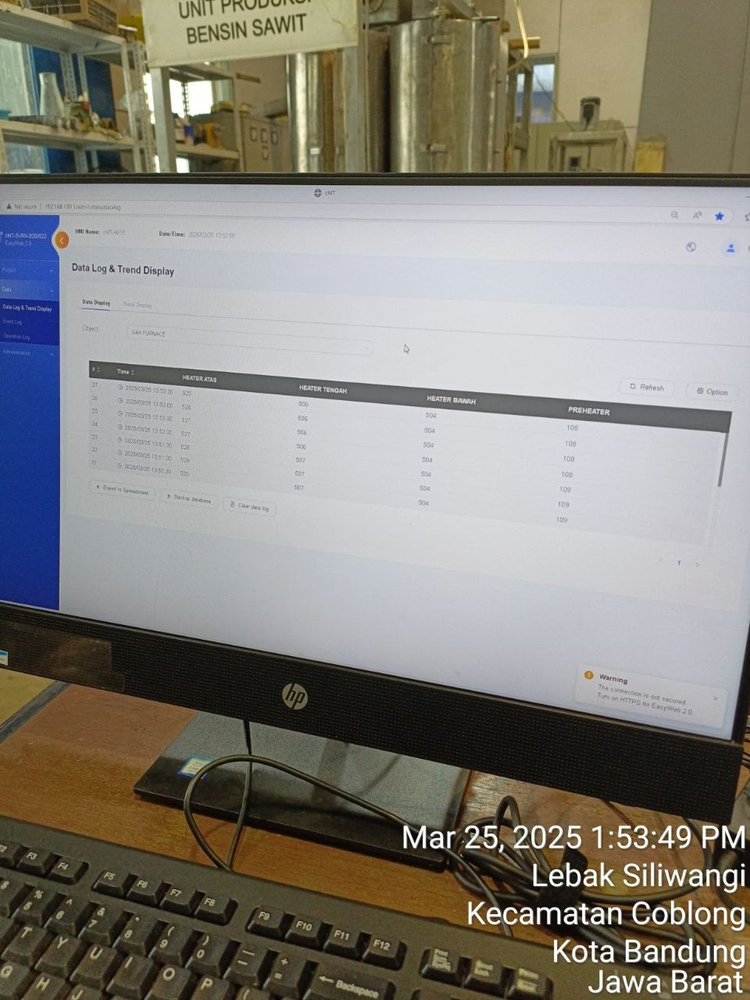
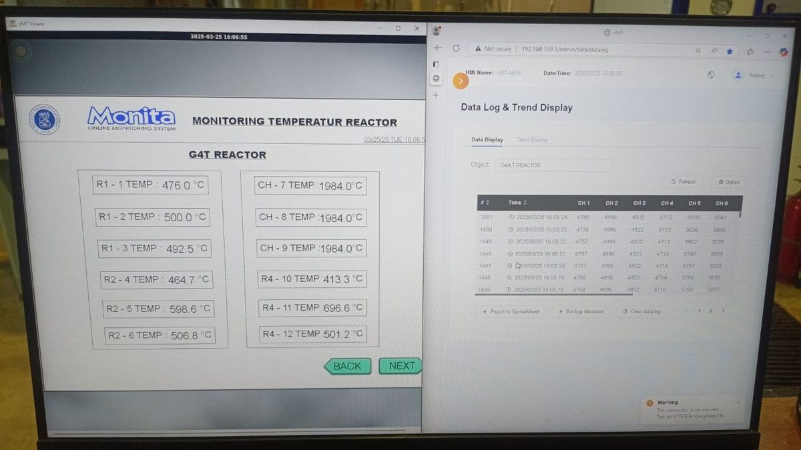

01
CAPTURE
IoT · Sensors
Real-time monitoring Carbon Capture terintegrasi smart sensors. Mengembangkan dan mengkodekan instrumen sensor untuk pengumpulan data langsung.
Saya membangun sistem monitoring industri — dari konfigurasi PLC & SCADA di lapangan & IoT.
Fresh graduate Engineering Physics UGM (GPA 3.35) dengan pengalaman lapangan langsung di SKK MIGAS, PT Pertamina RU VI Balongan, dan PT Daun Biru Engineering.
Saya memimpin eksekusi proyek instrumentasi-listrik, mengonfigurasi sistem monitoring online (MONITA) di pembangkit dan kilang, serta melakukan troubleshooting vibration monitoring berbasis Allen Bradley PLC untuk proyek 650MW Muara Tawar.
Pendekatan saya: kerja tim yang solid, komunikasi teknis yang jelas, dan komitmen pada profesionalisme.
Proyek-proyek yang mencakup IoT, kontrol proses, dan energi berkelanjutan.
IoT · Sensors
Real-time monitoring Carbon Capture terintegrasi smart sensors. Mengembangkan dan mengkodekan instrumen sensor untuk pengumpulan data langsung.
Engineering Design
P&ID, Instrument Index, I/O List, Cable Block, JB Wiring, Loop Drawing, Datasheet & Control Narrative.
Automation · IoT
Desain SPBU cerdas: AutoCAD layout, Arduino programming, dan sistem wiring kelistrikan untuk pariwisata IoT.
Sustainability
Proposal IKN dengan Microbial Fuel Cell & Smart Windows berbasis material lokal — konsumsi energi mendekati nol.
Sertifikasi dan kursus yang sedang dijalani untuk memperkuat kompetensi kontrol & instrumentasi.
Dokumentasi langsung dari proyek-proyek instrumentation & kontrol di lapangan.








